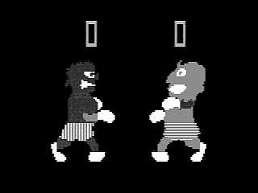

Sega Heavyweight Champ
The first fighting game — and arguably the first motion-controlled video game — with spring-loaded mechanical boxing glove controllers on articulated arms

Overview
Sega Heavyweight Champ, released in Japan in October 1976, is recognized as the first video game to feature hand-to-hand combat and arguably the first motion-controlled video game. The black-and-white arcade cabinet featured two large boxing glove-shaped controllers mounted on articulated, spring-loaded arms — one for each player in this two-player competitive game.
The controllers offered two mechanical degrees of freedom: vertical movement (up/down to target high or low punches) and horizontal inward push (to throw a punch). Springs returned the gloves to a neutral position after each strike. The game ran entirely on discrete TTL logic — no microprocessor, no ROMs, no software — with switch contacts detecting the glove positions. Scoring was binary: right punches were worth double points, and proximity to the opponent affected score values. Matches lasted 45-80 seconds.
The game was priced at ¥620,000 and ranked as the #3 highest-grossing arcade video game of 1976 in Japan. It was licensed to NAT/Europlay in Bologna, Italy, which produced a version called "World Boxe" using original Sega PCBs in locally manufactured cabinets. No functioning original cabinet is known to survive today. However, in September 2025, the Tilt Museum in Bologna rediscovered the original hand-drawn schematics and manual from the NAT/Europlay archives, opening the possibility of reconstruction.
Deep dive
Heavyweight Champ emerged during Sega's pre-microprocessor era, when arcade games were built from discrete transistor-transistor logic (TTL) chips. This was hardware design, not software engineering — the game logic was literally wired into the circuit board. No CPU meant no programmability: every interaction had to be anticipated and hardwired into the circuit design. The cabinet was large (92 kg) with a 19-inch black-and-white monitor. It was released in Japan in October 1976 at ¥620,000 and appeared at San Diego's Sega Center arcade by 1977. Sega Arcade History (Enterbrain, 2002) lists it in the 1973-76 section, and the Japanese trade journal Game Machine ranked it #3 for 1976 in its February 1977 issue.
The glove controllers were the exclusive input method — no joysticks, no buttons. Each controller arm had two degrees of freedom: (1) vertical position, detected by up and down limit switches, and (2) horizontal push-in, detected by a strike switch triggered when the glove was pushed inward toward the cabinet. Springs returned the gloves to a neutral extended position after release. This is fundamentally different from Exciting Boxing's pneumatic approach. Heavyweight Champ used discrete mechanical displacement: the glove is either at a high position or a low position, and a punch is either thrown or not. The spring-loaded arms provided passive haptic feedback — physical resistance when pushing — making the interaction feel like actual punching rather than just pressing a button. The entire interaction loop was grab, aim (up/down), punch (push in), release (springs return), repeat.
For decades, Heavyweight Champ was considered completely lost — no known functioning cabinets, no ROMs to dump (since it had no ROMs), and only a few grainy photographs. The game appeared on the Lost Media Wiki. A Yahoo Japan auction around 2017-2019 showed a cabinet with a broken glass bezel, but its fate is unknown. In September 2025, everything changed. Federico Croci, founder of the Tilt Museum (Museo del Flipper) in Bologna, Italy, announced that his museum possessed the original hand-drawn schematics and manual for Heavyweight Champ. These came from the archives of NAT/Europlay, the Bologna-based company that manufactured the licensed Italian version "World Boxe." Sega had provided not just PCBs and parts to NAT/Europlay, but complete documentation. The schematics are being cataloged for digitization and eventual public release. This discovery means the game can potentially be reconstructed — a remarkable preservation story for one of the most significant lost artifacts in video game history.
The choice of mechanical spring-loaded arms for Heavyweight Champ's controllers was not arbitrary — it was the only practical technology available in 1976 for creating a physically engaging punching interface. Potentiometers and analog joysticks existed but were fragile and expensive. Pneumatic sensors like those in Exciting Boxing (1987) required reliable, cheap pressure transducers that weren't yet available. Optical encoders were industrial equipment. So Sega went mechanical: metal arms, pivot joints, limit switches, and springs. The springs weren't just for return force — they were the physical experience. Punching against a spring feels like punching. The controller didn't simulate boxing; it transduced actual boxing-like motion into binary game signals.
Team & pioneers
- Sega Enterprises, Ltd.. Developer and publisher. Individual designers are not recorded in any available source — common for pre-microprocessor arcade games where attribution was almost never given to individuals.
- NAT/Europlay (Bologna, Italy). Italian licensee that produced the 'World Boxe' variant using original Sega PCBs and parts in locally manufactured cabinets.
- Federico Croci / Tilt Museum. Founder of Museo del Flipper in Bologna. Rediscovered the original schematics in September 2025 from the NAT/Europlay archives.
Media

Sources
- Sega Retro — Heavyweight Champ (1976) comprehensive entry with technical specs, release history, images, and flyer PDF
- Wikipedia — Heavyweight Champ article with historical context and screenshot
- KLOV / Arcade-Museum.com — cabinet entry with census data
- Undumped Wiki — technical entry noting discrete logic architecture (no CPU/ROMs)
- Time Extension (Sep 2025) — "Italian Museum Uncovers Blueprints to Historic Lost Sega Game" — coverage of the Bologna schematics discovery
- KLOV Forum — "Sega Heavyweight Champ (1976) — Lost Game, Looking for Clues" — extensive collector discussion with auction photos and schematics discovery thread
- Eurogamer — "The Tao of Beat-em-ups" (2008) — historical article describing controller mechanics
- CBS 8 San Diego (1977) — News footage of Heavyweight Champ at San Diego's Sega Center arcade
- Tilt Museum Bologna — schematics discovery livestream
- Japanese flyer PDF on Sega Retro
- Game Machine #65 (Feb 1977) — ranks Heavyweight Champ #3 arcade game of 1976